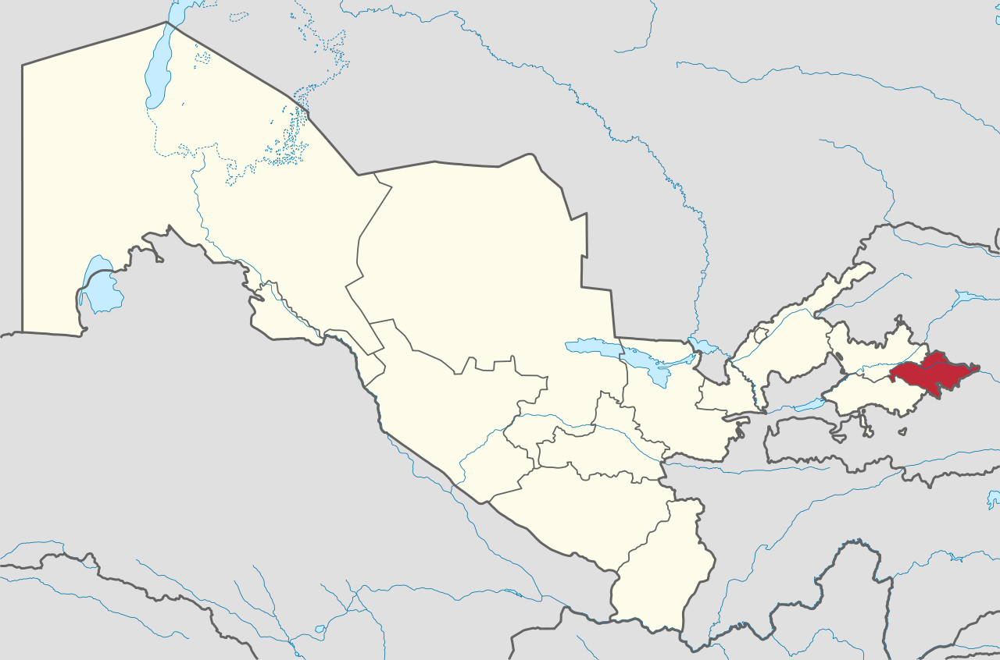

Andijon viloyati – O'zbekiston Respublikasi tarkibidagi viloyat. Farg'ona vodiysining sharqiy qismida. 1941-yil 6-martda tashkil etilgan. Maydoni 4,2 ming km2. Aholisi 3 253 501 kishi (2022-yil 1-yanvar holatiga). Andijon viloyatida 14 qishloq tuman, 11 shahar va 95 qishloq fuqarolari yig'ini bor (2000). Markazi — Andijon shahri.
Tugadi